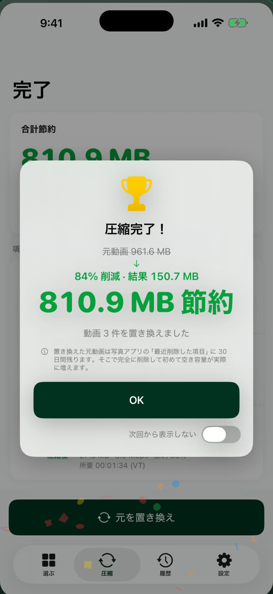
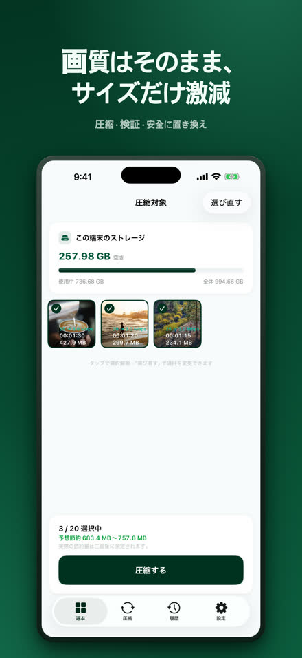
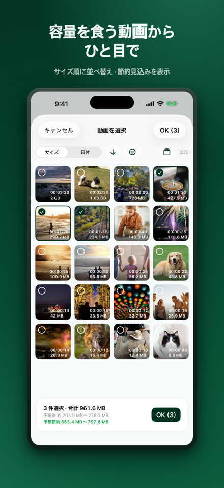
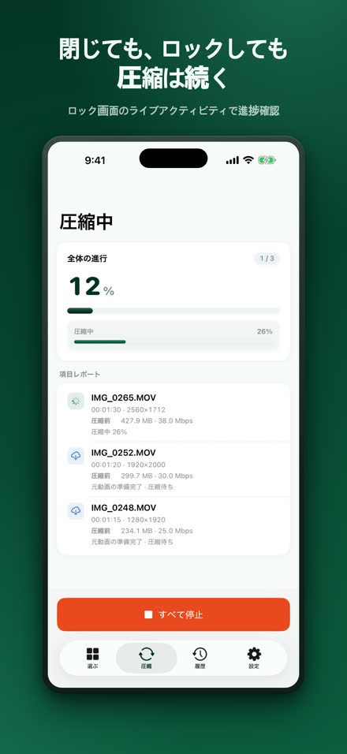
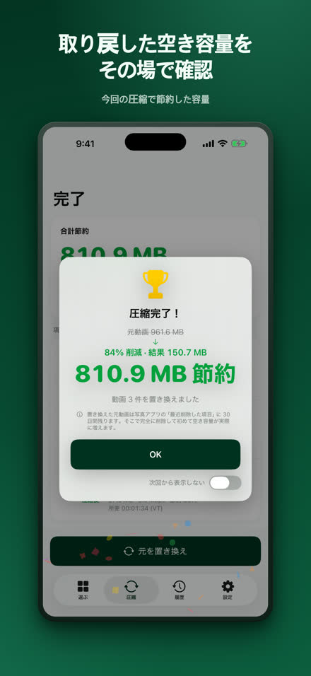
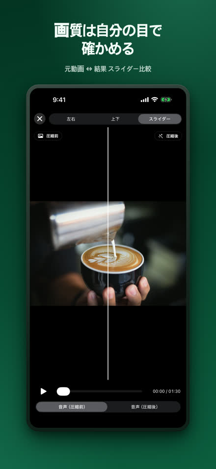
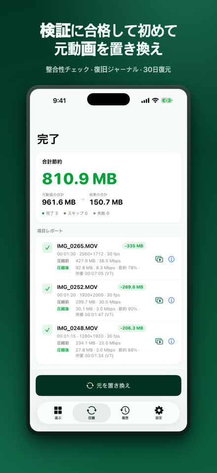
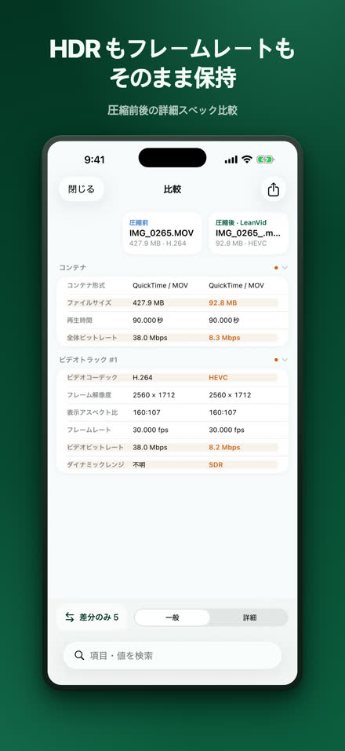
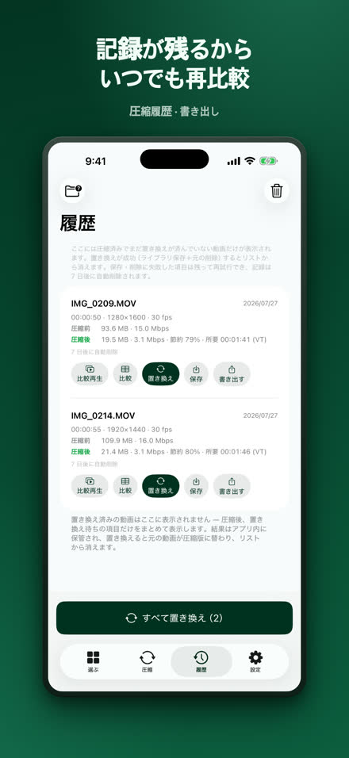

LeanVid
画質はそのままに、容量だけ小さく。
LeanVid は写真ライブラリとファイルアプリの動画を、ビットレートだけ下げて圧縮します — 解像度・フレームレート・色・HDR はそのままです。すべての結果は元の動画を置き換える前に検証され、写真ライブラリの元の動画は30日間復元できます。
App StoreからダウンロードiOS 18 以降 · iPhone および iPad（Apple silicon 搭載の Mac では iPad アプリとして動作）

同じ動画を、ずっと小さく。
元動画3:341.24 GB
LeanVid3:3499.4 MB
約92%小さく
自社テスト：3分34秒の画面収録。結果は動画によって異なります。
選んで、圧縮して、確かめて、置き換える。








必要なものは、ぜんぶ入り。
画質を保つ圧縮
ビットレートだけを調整し、HDR とすべてのトラックを保持
検証済みの安全な置き換え
整合性チェック・復旧ジャーナル・システム確認
自分の目で確認
並べて・スライダーでの比較、詳細なスペック表
ファイルアプリと多様な形式
このiPhone内・iCloud Drive の動画も選べます。MKV・WebM・AVI・WMV・FLV・TS・MPG・VOB ファイルは端末内で HEVC/MP4 に変換します
待ち時間なし
Live Activity で進捗を表示するバックグラウンド圧縮（iOS 26 以降）。それ以前のバージョンでは、アプリに戻ると自動的に再開します
オンデバイス処理
動画は iPhone 上で圧縮され、どこにもアップロードされません。アカウントは不要です — プライバシー